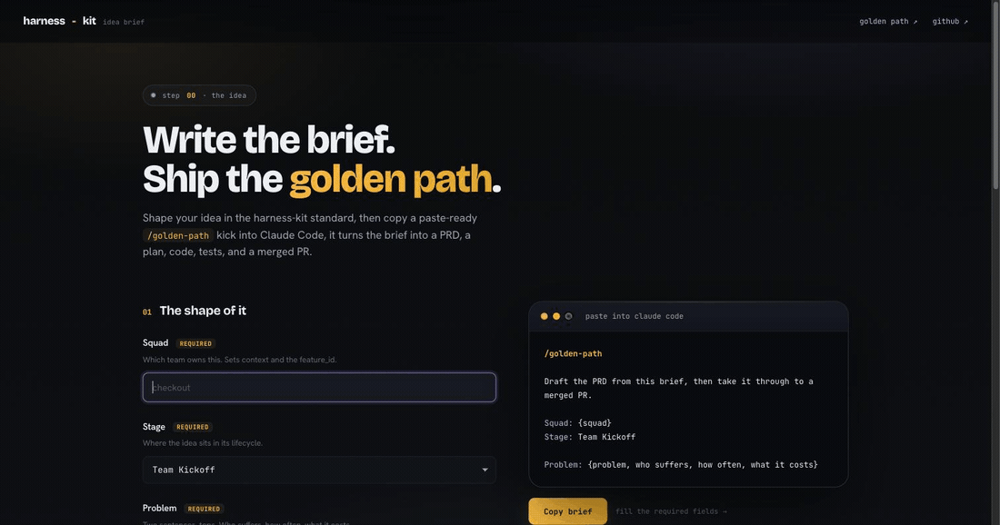
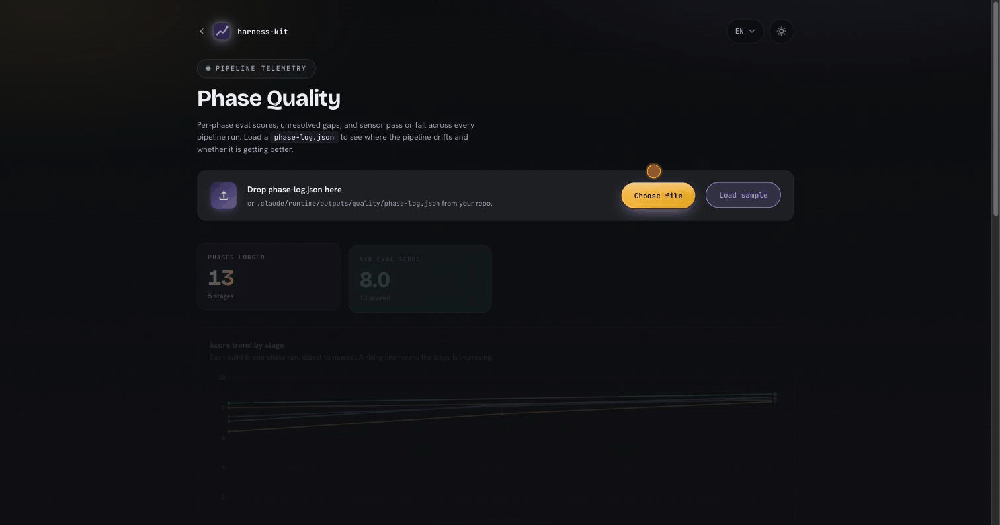

harness-kit is a set of Claude Code agents, a product manager, a staff engineer, and a system architect, that carry a raw idea through prd → prp → plan → dev → test → pr, with a pass/fail check and a scored review at every stage. Nothing advances on vibes.
the full pipeline, one walkthrough
Most features get built twice. Once in a hurry to see the thing work, and again when you realize nobody wrote down the problem it solved, the acceptance criteria drifted, and the review was a rubber stamp. The parts that make a feature correct are the first to get skipped when you move fast with an AI agent. harness-kit puts them back, and does the writing for you.
A clear problem statement, real acceptance criteria, your conventions, and an honest review. Done by hand for every feature, they quietly rot.
Quality stops depending on who is at the keyboard or how tired they are. Every feature takes the same six stages, in the same order.
A deterministic sensor checks the structure, an LLM eval scores the quality. Weak output corrects itself before it reaches you.
Every approved stage records a score, so you know whether your specs, or your tests, are getting better across runs.
What you get: one command takes a raw idea to a merged pull request. Six documents, a check and a scored review at each stage, and two moments where a human decides, is this the right direction, and is this PR good to open. You spend your attention there, not on formatting a spec.
sequenceDiagram
actor You
participant PM as product-manager
participant Gate as sensor + eval
participant SSE as staff-engineer
participant GH as GitHub
You->>PM: idea
PM->>Gate: PRD
Gate-->>You: pass + score
You->>PM: approve direction
PM->>Gate: PRP
Gate-->>PM: pass + score
PM->>SSE: approved spec
SSE->>Gate: plan, then dev, then test
Gate-->>SSE: pass + score at each
You->>SSE: approve the PR
SSE->>GH: open PR
GH-->>You: merged
idea in, merged PR out · two human decisions, everything else on rails
harness-kit is one product with four surfaces. Each does one job, and they chain: shape the idea, run the pipeline, watch its quality, drive it from a terminal. Start anywhere.
A web app that turns your idea into a paste-ready /golden-path prompt, with inline validation as you type.
The agents and the gated flow. Carries the idea prd → prp → plan → dev → test → pr, one gate at a time.
Tracks each stage's eval score, open gaps, and sensor failures across every run, over time.
jump to it → FRONT 4 the cockpitA terminal UI over the pipeline. Every stage live, a stage run on a keypress, the two gates as prompts.
jump to it →front 2 is the engine · front 1 feeds it · front 3 measures it · front 4 drives it
A single web page that turns a rough idea into a well-formed /golden-path prompt. Fill squad, problem, hypothesis, and metric; it validates each field against the PRD conventions as you type, and builds the exact prompt to paste into Claude Code. No blank-page problem.

fields on the left, the prompt assembles live on the right
Hit Copy brief and paste the ready-made /golden-path kick into Claude Code. Already know the idea cold? Skip the builder and type /golden-path with the brief yourself.
Shipping a feature on vibes skips the parts that make it correct: framing the problem, writing acceptance criteria, holding the conventions, gating the review. harness-kit puts those back, without you hand-writing a single doc.
flowchart LR
idea([idea]) --> prd
subgraph PM[product-manager]
prd --> prp
end
subgraph SSE[staff-software-engineer]
plan --> dev --> test --> pr
end
prp --> plan
pr --> merged([merged PR])
two agents, one pipeline · each arrow is a gated handoff
Every stage produces a markdown artifact, gated by a deterministic sensor (pass/fail) and a scored eval (threshold 8.0). After the PR opens, an in-session monitor watches for merge and clears state on its own.
The same loop runs at every stage. The agent generates the artifact, a sensor checks its structure, an eval scores its quality, and only then does a human approve. Failures self-correct before they reach you.
flowchart LR
gen[generate artifact] --> sensor{sensor: structure check}
sensor -->|fail| gen
sensor -->|pass| eval{eval: LLM judge}
eval -->|"score < 8.0, retry x3"| gen
eval -->|"score ≥ 8.0"| approve[human approves]
approve --> next([next stage])
guides steer before · sensors give deterministic feedback · evals give inferential feedback · humans stay on the loop
Böckeler splits controls into computational, deterministic and CPU-run, and inferential, needing judgment. Every sensor here declares which it is, and the difference is the whole point: a sensor nothing machine-checked can never report a pass.
flowchart LR
s[sensor declares how it is enforced] --> c{Execution?}
c -->|computational| r[runner enforces it]
c -->|inferential| m[a model applies it]
r --> ok[pass]
r --> no[fail]
r --> err[broken spec is an error, never a pass]
m --> inf[logged inferential, never a pass]
a sensor that claims to be deterministic but checks nothing is an error, not a pass
This one is scar tissue. Sensors here once declared themselves deterministic hard gates while writing their checks as prose the runner could not parse. It returned 0, and the quality log recorded them as passed on every run, against a check that never happened. That is the illusion of quality the gates exist to prevent, so the harness now has its own tests, its own CI, and a ledger that fails the build when a sensor lies about how it is enforced.
The same gated loop, once per agent. These are the three pipelines you actually run: what the command does, which sensors fire, which eval scores it, and where the gate sits. Every scored eval uses the same 8.0 threshold and the same three-attempt retry.
sequenceDiagram
actor You
participant PM as product-manager
participant S as sensors
participant E as eval (fresh judge)
You->>PM: /product-manager:run
PM->>PM: read intake artifact
PM->>S: PRD → structure, acceptance criteria
S-->>PM: pass or fail, retry up to 3
PM->>E: prd-quality
E-->>PM: score, needs ≥ 8.0
PM->>PM: approval marker on the PRD
Note over PM,E: no approved PRD, no PRP. the hook refuses to start it
PM->>S: PRP → structure, context, links
S-->>PM: pass or fail, retry up to 3
PM->>E: prp-quality, prp-context-readiness
E-->>PM: score, needs ≥ 8.0
PM-->>You: PRP ready for handoff
product-manager · prd → prp · reads the intake artifact, never stops to ask you
sequenceDiagram
actor You
participant SSE as staff-engineer
participant S as sensors
participant E as eval (fresh judge)
participant GH as GitHub
You->>SSE: /sse:run
SSE->>SSE: read approved PRP, detect area skill
SSE->>S: plan → plan-structure
S-->>SSE: pass
SSE->>E: plan-quality
E-->>SSE: score ≥ 8.0, approved
SSE->>S: dev → conventions, coverage, structure
S-->>SSE: fail means fix and retry, stop after 3
SSE->>E: dev-quality
E-->>SSE: score ≥ 8.0, approved
SSE->>SSE: detect and run the test suite
SSE->>E: test-quality, only if exit code is 0
E-->>SSE: score ≥ 8.0, approved
Note over You,GH: the PR gate. --local stops here for good
SSE->>GH: gh pr create --draft
GH-->>SSE: PR url
SSE->>E: pr-quality
E-->>SSE: score ≥ 8.0, approved
SSE->>GH: pr-monitor polls for the merge
GH-->>You: merged, state cleared
staff-software-engineer · plan → dev → test → pr · dev is the one stage gated twice, on the code and on the summary
sequenceDiagram
actor You
participant SA as system-architect
participant S as sensors
participant E as eval (fresh judge)
You->>SA: /system-design:run
SA->>SA: route to a topic skill, or generic design
SA->>S: design → structure, rigor
S-->>SA: a missing number or diagram blocks
SA->>E: design-quality
E-->>SA: score ≥ 8.0, approved
SA->>SA: adversarial review, 10 staff questions
SA->>S: review → structure, review variant
S-->>SA: questions answered, verdict present
SA->>E: design-review-depth
E-->>SA: score ≥ 8.0
SA-->>You: verdict ship, revise, or block
system-architect · design → review · optional front stage before the PRP · block is terminal
The evaluator is always a fresh sub-agent that gets only the artifact and the rubric, never the context that wrote it. The author never grades its own work. Full wiring, verbatim paths and rubrics, in the Agent Pipelines wiki page.
One command, idea to merged PR.
Open the idea-brief builder and fill the fields, squad, problem, hypothesis, customers, metric. Inline validation holds you to the PRD conventions as you type.
Hit Copy brief and paste the ready-made /golden-path kick into Claude Code:
/golden-path Squad: checkout Problem: Returning guests abandon checkout when a card is declined once … Hypothesis: If we add one-tap retry, then completion rises 5 points, because … Success metric: checkout completion, from 71% to 76% within 30 days
All six gated stages run, PM (prd → prp) then Eng (plan → dev → test → pr). Approve each artifact when prompted; the status bar tracks where you are.
SSE flags pass straight through: --local, --sdd, --no-monitor. Already know the idea cold? Skip the builder and type /golden-path with the brief yourself.
Every flow shares the same pipeline state, so you can switch between them mid-feature.
| You want | Run | Stages |
|---|---|---|
| Hands-off, idea to PR, two gates | /pipeline:run "<idea>" | intake → prd → … → pr |
| Idea to merged PR | /golden-path | prd → prp → plan → dev → test → pr |
| Spec only, align before any code | /product-manager:run | prd → prp |
| Small change, plan in your head | /sse:run | plan → dev → test → pr |
| Local only, no PR | /sse:run --local | plan → dev → test |
| Loop until the spec passes | /sse:sdd | plan → [dev↔test↔eval] ×3 |
| Resume after a break | /pipeline:continue | next pending stage |
Sensors are deterministic structure checks, they block on failure and Claude regenerates until they pass. Evals are LLM-judge rubrics scored 0-10, threshold 8.0, retried up to 3 times. Each stage is also its own command: /sse:plan, /sse:dev, /sse:test, /sse:pr. Every command and gate →
Scores used to get lost in chat once a stage was approved. The quality dashboard persists per-phase signal across every run and answers one question: is each stage getting better or worse over time?

drop a phase-log.json and see where the pipeline drifts
Every time a phase is approved, a post-eval hook appends one deterministic entry, zero token cost, to phase-log.json: the eval score, the count of open gaps, the sensors re-run pass/fail, and a derived status (ok / degraded / failed). Drop that JSON on the page (a standalone file, no build, no network) for KPI tiles, a score trend by stage, failure rate, average score vs the 7.0 threshold, the sensors that block most, and the full run table.
A terminal UI over the pipeline. Every stage live, a stage run on a keypress, humans on the loop at two gates.
open a feature, read each artifact, approve the gate, all from the terminal
It renders each artifact, runs a stage on a keypress, and turns the two human gates into modal prompts, the direction gate lists intake's open NEEDS REVIEW items. It reads state and artifacts straight off disk, so it stays in sync with any Claude Code session driving the same feature. It ships bundled, no extra dependencies land in your project.
npm i -g @pieerry/harness-kit # once, puts hk-tui on your PATH hk-tui # open the cockpit in the current repo hk-tui path/to/repo # or point it at one hk-tui -- "add one-tap retry to checkout" # seed intake
Keys: ↑↓/jk move · enter run the stage · tab focus the reader · a approve a gate, x hold · q quit. Needs a TTY and Node 18+. Full model: Autonomy and Orchestration & Subagents.
Two layers: the plugin (fetched once from the marketplace) and the harness (laid into each repo you want it in).
/plugin marketplace add Pierry/harness-kit /plugin install harness-kit@harness-kit
Restart Claude Code, then inside the repo you want to use it in:
/harness-kit:install
Lays the full harness into that repo, agents, commands, skills, hooks, and the status bar, under .claude/ plus AGENTS.md and CLAUDE.md at the root. Requires Claude Code, python3, git, and the gh CLI for PRs.
Updating. The plugin version is pinned, so a release does not reach you until you pull it: /plugin update harness-kit then /harness-kit:update in each repo. New users get the latest on install automatically.
Optional, all local-first. As the repo and the harness grow, the tokens spent loading context and reading command output start to dominate. Four tools cut that, and they stack with the per-stage model tiers.
| Tool | Cuts | How |
|---|---|---|
| /context:pack | input | repomix snapshot of the target repo, cached per feature |
| /context:graph | input | graphify knowledge graph, query "what calls X" (~71x fewer tokens) |
| qmd | input | semantic search over the guides, returns the relevant excerpt not the whole file |
| rtk | output | shell proxy, compresses git/test/lint/grep output 60-90% |
/context:pack and /context:graph ship with the harness and feed the plan and SDD-eval stages. qmd and rtk are third-party, install them yourself:
# rtk, output filter, auto-intercepts git/test/lint/grep brew install rtk rtk init -g # select Claude Code; rtk gain shows savings # qmd, semantic doc search over the harness guide tree npm install -g @tobilu/qmd setup/setup-qmd.sh # indexes the guide tree, then embeds (~2GB models, once)
qmd and rtk are not bundled. Rationale and measured wins in issue #2. Full tier order in context-strategy.md.
All registered in AGENTS.md. Each ships its own sensors, evals, guides, and skills.
Turns a problem into an engineering-ready spec, a PRD then a PRP.
Turns an approved PRP into a merged PR, or a satisfied spec. Area skills auto-detected from the repo, plus a designer skill for new UIs.
Turns a problem into a rigorous System Design Doc, then an adversarial review. Topic playbooks per classic design.
This is not invented method. harness-kit is a concrete implementation of harness engineering, and the system-architect agent reasons from the established engineering canon.
From Birgitta Böckeler (Thoughtworks / martinfowler.com). Every stage gate here is exactly this split.
Behind the system-architect agent. Full mapping in design-method.md.
The system-architect topic skills adapt one classic problem each, with the theory, diagrams, and references per design.
Go deeper than this page.